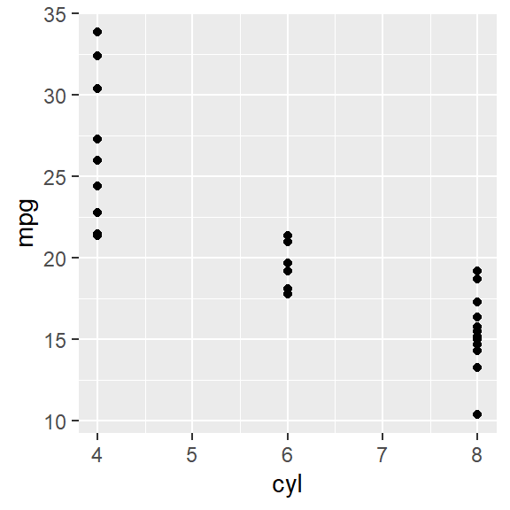

[1] 1.414214[1] 1.732051Dies ist eine kurze Einführung in das Schreiben mit Quarto. Es handelt sich um ein Programmsystem zur Erstellung wissenschaftlicher und technischer Dokumente, mit dem Sie
können. Mehr Informationen finden Sie in im Tutorial zur Verwendung von Quarto in RStudio.
Eine Quarto-Datei besitzt die Endung .qmd und setzt sich aus einem Dateikopf und dem eigentlichen Inhalt zusammen.
Ganz zu Beginn der Datei steht zwischen --- und --- der so genannte YAML-Header der Datei (YAML heißt die Auszeichnungssprache des Headers, aber das ist für uns nicht wichtig). Im Dateikopf werden grundlegende Einstellungen zum Dokument festgelegt. Sie könnnen für ihre Arbeit folgenden Header als Grundlage verwenden:
---
title: "Titel eintragen"
author: "Namen eintragen"
date: today
date-format: long
lang: de
bibliography: bibliographie.bib
bibliographystyle: american-psychological-association
execute:
echo: false
format:
typst:
toc: true
section-numbering: 1.1.1
---In diesem Header werden zunächst Titel, Autor:innen, das Datum sowie die Dokumentensprache festgelegt.
Anschließend wird angegeben, dass sich die verwendeten Literaturstellen in der Datei bibliographie.bib befinden und der weit verbreitete Zitierstil der amerikanischen Psychologischen Vereinigung verwendet werden soll.
Im nächsten Abschnitt wird gesagt, dass der R-Code nicht ausgegeben wird. Verwenden Sie diese Option um den Fluss beim Lesen Ihres Textes nicht durch Programmcode zu stören. Bei Bedarf lassen sich die Rechnungen gut anhand des Quellcodes nachvollziehen.
Schließlich wir als Ausgabeformat typst ausgewählt um ein PDF-Dokument zu erzeugen. Dabei steht toc: true dafür, dass ein Inhaltsverzeichnis eingefügt wird (toc = Table of Contents), number-sections: true für nummerierte Abschnitte und section-numbering: 1.1.1 für das Nummerierungschema.
R-Setup
In dem Setup-Abschnitt
```{r}
library(readxl)
library(tidyverse)
library(kableExtra)
```werden die notwendigen Bibliotheken geladen. Es empfiehlt sich alle im Dokument verwendeten Pakete als ersten Code-Chunk im Dokument zu laden.
Den weitaus größten Teil des Dokuments nehmen Ihre eigenen statistischen Berechnungen und Auswertungen ein. Geschrieben wird in der Quarto Markdown Auszeichnungssprache, einer Variante von Markdown (https://de.wikipedia.org/wiki/Markdown). Es handelt sich bei Quarto Markdown um eine einfache Sprache zur Erstellung von Dokumenten aus einer Kombination von eigenem Text und Programmcode. Die Elemente der Sprache werden im folgenden Abschnitt erklärt.
Abschnittsüberschriften werden durch vorangestellte Hash-Zeichen markiert.
# Überschrift erste Gliederungsebene
## Überschrift zweite Gliederungsebene
### Überschrift dritte GliederungsebeneSoll der Abschnitt nicht nummeriert werden, dann kommt ein {-} oder {.unnumbered} an das Ende der Zeile.
Text wird kursiv gesetzt, wenn die Zeichen wie in *text* zwischen Sternchen gesetzt werden. Fettdruck erhält man mit zwei Sternchen, also **text** und Fett-Kursiv mit ***text***. Ein Paar von Tilden (~) stellen Zeichen tief (H~2~O ergibt H2O), entsprechend erzeugt ein Paar von Caret-Zeichen (^) hochgestellten Text (Cu^2+^ ergibt Cu2+).
Bullet-Listen werden mit vorangestellten Bindestrich erstellt. Zum Beispiel ergibt die Eingabe
- Ein Punkt in der Liste
- Ein weiterer Punkt
- Eine Ebene eingerückt
- Und noch ein Punktdie Liste
Nummerierte Listen erzeugt man entsprechend mit einer vorangestellten Zahl oder Buchstaben. Mit
1. Ein Punkt in der Liste
1. Ein weiterer Punkt
a. Eine Ebene eingerückt
a. Und noch ein Punktergibt sich die Ausgabe
Die wichtigste Möglichkeit R-Code in Dokumente einzufügen sind Code-Chunks. Ein Code-Chunk enthält Anweisungen in der Programmiersprache R. So erzeugt etwa der Chunk
```{r}
sqrt(2)
sqrt(3)
```die Ausgabe
[1] 1.414214[1] 1.732051Beachten Sie, dass der Code selber nicht mit ausgegeben wird, da wir dies in dem YAML-Header voreingestellt haben. Die Ausgabe von R-Chunks kann mit verschiedenen Optionen konfiguriert werden.
Option zur Ausgabe
Mithilfe von Codezelloptionen können Optionen zur Ausführung des Code angegeben werden. Diese beginnen im Code-Chunk immer mit #| . Beispielsweise gibt #| echo: true an, dass der Code mit ausgegeben wird. Mit
```{r}
#| echo: true
sqrt(5)
sqrt(6)
```erhalten wir also
sqrt(5)[1] 2.236068sqrt(6)[1] 2.44949Welche Ausgaben von den verschiedenen Optionen unterdrückt werden ist in der folgenden Tabelle zusammengefasst:
| Option | Ausführung | Anzeige | Ausgabe | Plots | Meldungen | Warnungen |
|---|---|---|---|---|---|---|
eval: FALSE |
X | X | X | X | X | |
include: FALSE |
X | X | X | X | X | |
echo: FALSE |
X | |||||
results: hide |
X | |||||
fig-show: hide |
X | |||||
message: FALSE |
X | |||||
warning: FALSE |
X |
Optionen zur Referenzerstellung
Mit der Option #| label: können Sie ihrem Code-Chunk eine Bezeichnung geben, um diesen später im Text zu referenzieren.
Optionen für Graphiken
Darüber hinaus gibt es eine Reihe von Optionen, mit denen sich die erzeugten Graphiken angepassen lassen:
#| fig-width und #| fig-height: Die Größe des R-Plots in Inches (2.54cm). Die Plots werden zunächst in dieser Größe erzeugt und dann auf die Abmessungen der Seite skaliert. Große Plots resultieren also in einer kleinen Schriftgröße.
#| fig-asp: Mit diesem Wert wird das Seitenverhältnis der Graphik angegeben.
#| out-width: Die Ausgabebreite von R-Plots in dem erzeugten Dokument. Der Plot wird auf die angegebenen Prozent der Textbreite skaliert. Zum Beispiel bedeutet out-width: 80%, dass der Plot auf 80% der Textbreite dargestellt wird. Wenn Sie keine Einheit wie % oder inch angeben, werden Pixel als Standardeinheit verwendet. Mögliche Einheiten sind px,cm , mm , in, inch oder % .
#| fig-align: Die Ausrichtung des Plots, entweder 'left', 'center', oder 'right'. Hat bei einer Breite des Plots von 100% keinen Effekt.
#| fig-cap: Bildunterschrift.
Hier ein Beispiel mit den Optionen #| fig-width: 3 , #| fig-height: 3 und #| out-width: 50%, die einen quadratischen Plot erzeugen.

mtcars)In der Regel funktionieren die Standardeinstellung aber gut und können unverändert beibehalten werden.
Programmcode in R kann mit {r} R-Code auch in den fortlaufenden Text eingebaut werden. Zum Beispiel berechnet {r} signif(sqrt(2), 4 die Wurzel der Zahl 2 und gibt das Ergebnis mit vier signifikanten Stellen aus, der Text enthält daher die Ausgabe 1.414.
Besonders praktisch ist es dabei, dass auch auf vorher definierte Variablen zugegriffen werden kann. Wird also in einem Code-Chunk ein Wert berechnet dann kann dieser später im Text ausgegeben werden. Zum Beispiel wird mit dem Code-Chunk
```{r}
x <- sqrt(6)
```die Variable x berechnet. Dann ergibt x = {r} x die Ausgabe x = 2.4494897.
Mathematischer Formelsatz erfolgt in der Schreibweise von LaTeX. Wird ein Ausdruck zwischen Dollarzeichen gesetzt, dann erscheint er als Formel im Text. Zum Beispiel ergibt $M = ql^2/8$ die Ausgabe \(M = ql^2/8\). Vom Text Abgesetzte Formel werden durch doppelte Dollarzeichen ausgezeichnet. Zum Beispiel liefert
$$
M = \frac{ql^2}{8}
$$die Ausgabe
\[ M = \frac{ql^2}{8} \]
Wer die LaTeX-Schreibweise nicht kennt, kann sich auf https://www.zahlen-kern.de/editor/ helfen lassen.
Eine externe Graphik können Sie folgendermaßen einbinden:
{Darstellungsoptionen}
Als Beispiel:
{#fig-golden-gate width=60%}
Standardmäßig werden Graphiken in ihrer tatsächlichen Größe dargestellt. Sie können mit den Darstellungsoptionen width und height die Größe anpassen. Wenn Sie, wie in unserem Beispiel, nur width spezifizieren wird height automatisch an das Seitenverhältnis angepasst. Die Standardeinheit für Graphiken sind Pixel, sie können aber sowohl Prozentangaben (in Relation zum Textoutput) als auch anderen Einheiten wie Inches verwenden. Weiterhin ist #fig-golden-gate ein Label, das sie in der Form @fig-golden-gate verwenden, um im Text auf die Graphik zu verweisen. Hier ein Beispiel, wie das aussehen kann.
Abbildung 29.1 zeigt die Golden Gate Brücke in San Francisco, ein bedeutendes Denkmal der Ingenieurbaukunst.
Grundsätzlich gilt die Regel: Abbildungen werden immer im Text referenziert, sonst kann man sie auch weglassen.
Tabellen lassen sich aus einem Dataframe mit der Funktion kable erzeugen, ein Minimalbeispiel zeigt Tabelle 29.1. Auch hier kann wieder mithilfe der Bezeichnung des R-Chunks aus dem Text auf die Tabelle verwiesen werden.
| A | Test |
|---|---|
| \(\pi\) | 3.142 |
| \(\mathrm{e}\) | 2.718 |
| \(\sqrt{2}\) | 1.414 |
Alternativ können Tabellen auch in der Markdown-Schreibweise eingefügt werden.
| Länge | Breite | Höhe | Dichte |
|---|---|---|---|
| 5.1 | 3.5 | 1.4 | 0.2 |
| 4.9 | 3.0 | 1.4 | 0.2 |
| 4.7 | 3.2 | 1.3 | 0.2 |
| 4.6 | 3.1 | 1.5 | 0.2 |
| 5.0 | 3.6 | 1.4 | 0.2 |
| 5.4 | 3.9 | 1.7 | 0.4 |
Eine umfassende Erläuterung finden Sie auf der Website von Quarto unter https://quarto.org/docs/authoring/tables.html.
Um auf Literaturstellen zu verweisen werden die verwendeten Veröffentlichungen in der Datei bibliographie.bib gesammelt (die Datei kann auch anders heißen). Es handelt sich dabei um eine Datei im BibTeX-Format. Jeder Eintrag beginnt mit einer ID, zum Beispiel fahrmeir2016 für das Statistikbuch von Fahrmeir et al. Auf die Literaturstellen kann dann im Text mit [@ID] verwiesen werden. Beispielsweise ergibt [@fahrmeir2016] den Verweis (fahrmeir2016?). Die referenzierten Literaturstellen werden automatisch am Ende des Dokuments zusammengefasst.
Zur Verwaltung der Literaturliste ist das Programm Zotero sehr gut geeignet. Es lassen sich damit Literaturstellen sammeln und im BibTeX-Format exportieren, im visuellen Editor von RStudio können Zotero-Referenzen sogar direkt eingefügt werden.
Das Aussehen der PDF-Dokumente kann man angepassen. Wie das geht erklärt ein kurzes Video zur Einführung auf Youtube.
Auf der Webseite von Quarto gibt es noch eine tiefergehende Einführung in das wissenschaftliche Schreiben mit Quarto.